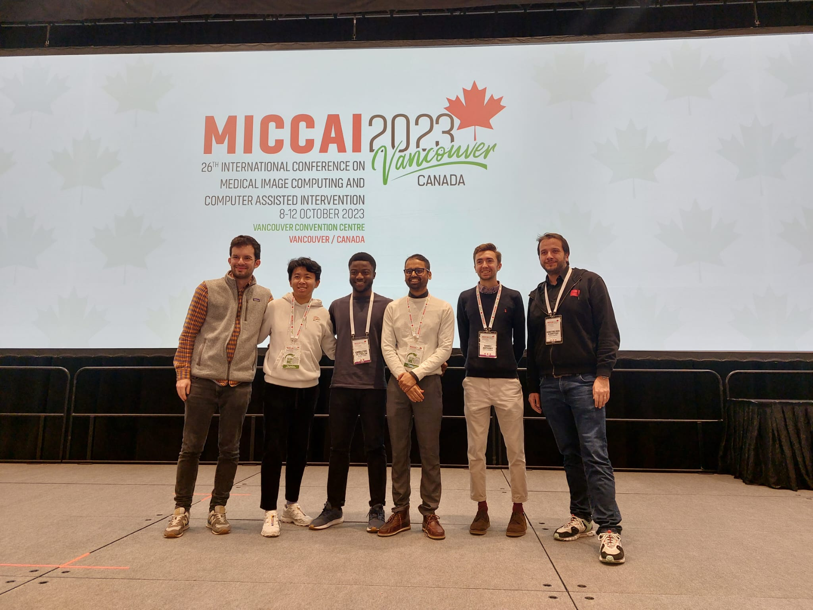
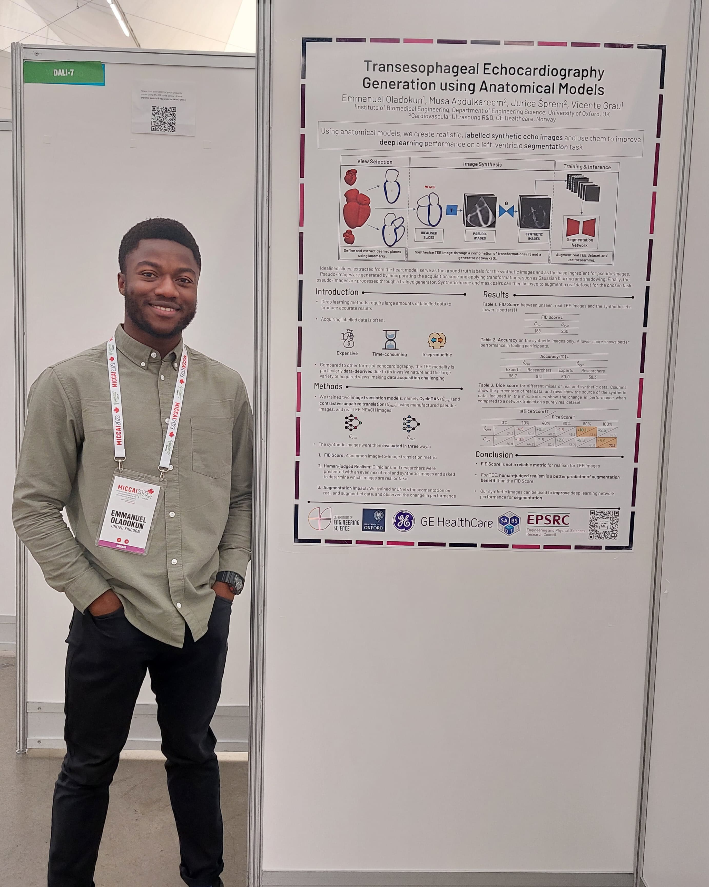
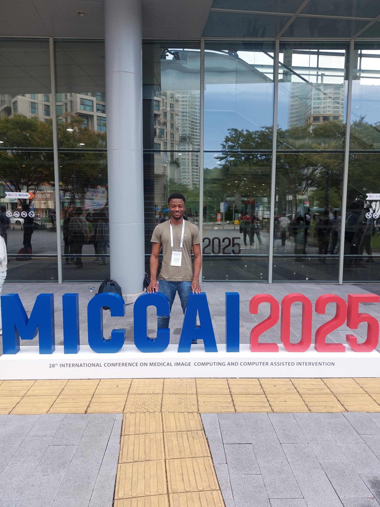
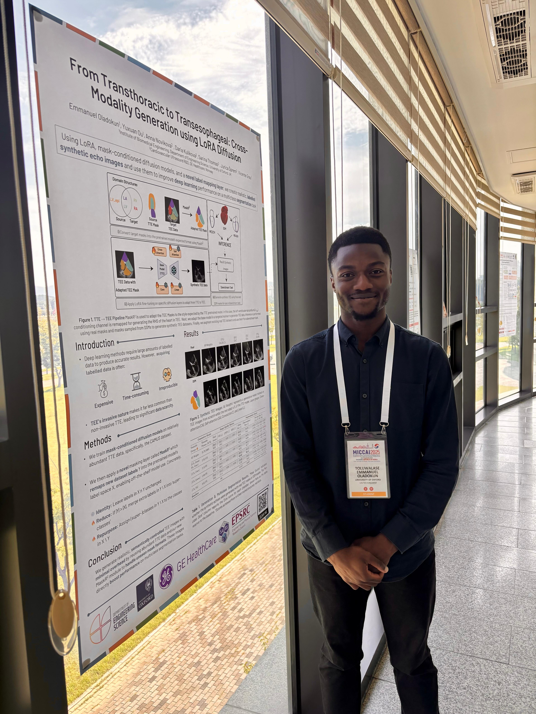
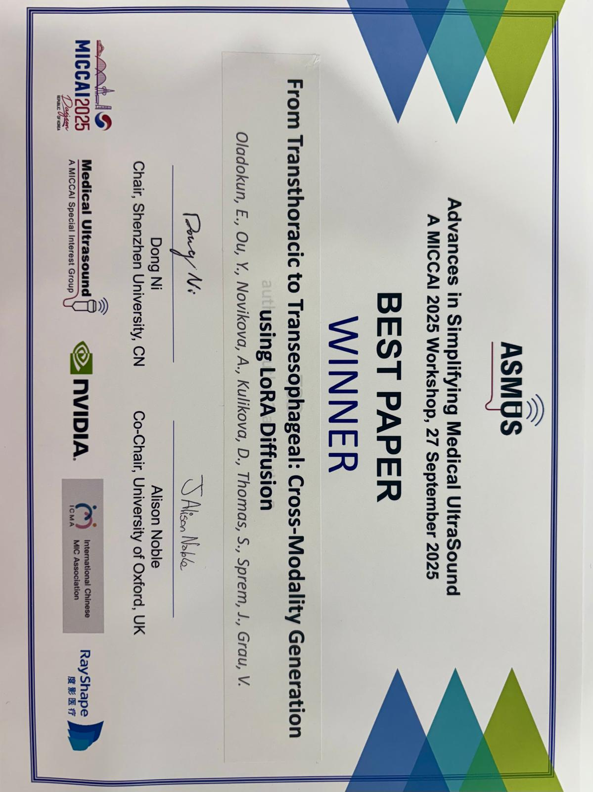

{kind=link}

Hi! I'm Emmanuel, an applied machine learning researcher focused on Generative AI.
DPhil in Engineering Science, University of Oxford. I build and evaluate end-to-end ML systems on large, noisy real-world datasets, with first-authored publications and industry collaboration.
Portfolio
Engineering
- Face2Visceral Live Demo·


- HandRiGht 🥈·
 ·
·
- ECIQC·
 ·GE HealthCare
·GE HealthCare - sciProject-MCMC Live Demo·

Interactive demos — explore Face2Visceral, a live MCMC visualiser, EchoLVFM video synthesis, and more.
View all demos →Publications
- Loading publications...
Skills
Python, MATLAB, C++; PyTorch, HuggingFace, NumPy, SciPy, Scikit-Learn; generative modelling, diffusion, flow matching, representation learning, contrastive learning, and robust evaluation on large-scale real-world datasets.
Production & Deployment
- Reduced computational cost by 30–50% in a production reservoir simulator by integrating machine learning models during my Schlumberger internship.
- Built and maintained robust data tooling with CI/CD and automated tests for DICOM quality control workflows in collaboration with GE HealthCare.
- Designed and evaluated statistical/ML pipelines on 4M noisy records from 208,948 admissions in a large-scale clinical dataset study.
My work spans generative modelling research, applied machine learning engineering, and collaborative projects across academia and industry. Recent work includes diffusion and flow matching methods, synthetic data generation for downstream tasks, and robust model evaluation in data-constrained settings.
{kind=link}

MICCAI 2023: Poster Presentation
{kind=link}

MICCAI 2025: Daejeon, South Korea
{kind=link}

MICCAI 2025: Poster Presentation
{kind=link}

ASMUS-MICCAI 2025: Best Paper Award
About Me
I am a DPhil in Engineering Science (Oxford) with a research focus on generative modelling for high-dimensional medical image and video data. My work covers diffusion models, flow matching, representation learning, and foundation-model adaptation, with emphasis on robustness, scalability, and responsible evaluation. Across research and internships, I have developed end-to-end ML workflows from data curation and model training to analysis and deployment-oriented optimisation, including projects with GE HealthCare and Schlumberger.